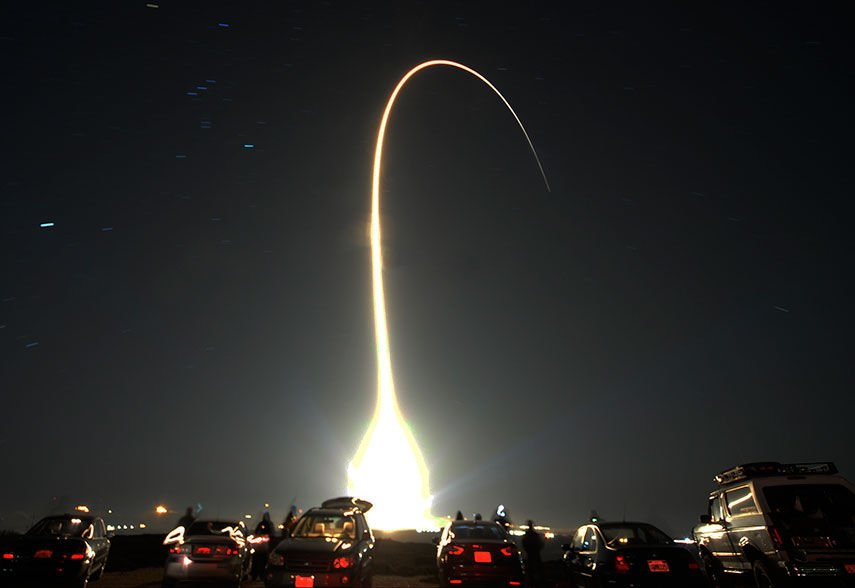
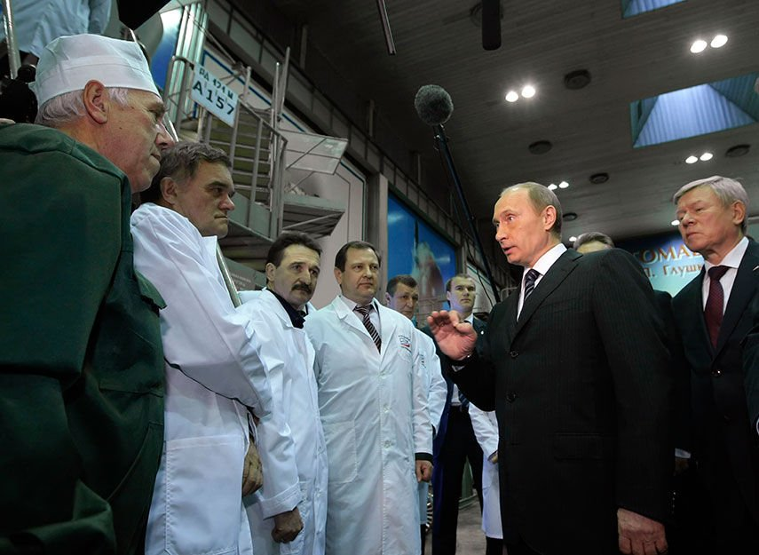

Товарищ Капитализм.Как Россия делает бизнес в эпоху Путина
Часть 4: Влиятельный американский сенатор несколько месяцев пытается выяснить детали вызывающего вопросы контракта, по которому российская компания поставляет ракетные двигатели для военно-космической программы США.
Вопросы следующие: сколько ВВС США платит за двигатели, сколько зарабатывает российская сторона и не обогащаются ли при этом тайно люди из ближнего круга президента Владимира Путина в результате завышения цен.
Документы, к которым получило доступ агентство Рейтер, дают ряд ответов.Крохотная фирма из Флориды, выступающая в этой сделке посредником, завышает цену каждого двигателя на миллионы долларов.
Эта фирма — RD Amross с персоналом из пяти человек, СП российского производителя двигателей НПО Энергомаш и американского аэрокосмического гиганта United Technologies.Согласно служебным документам компании, описывающим контракт на поставку двигателей РД-180, Amross намерена заработать в рамках текущего контракта $93 миллиона за счет своих надбавок к цене.
Эти расходы покрываются в сделке, несмотря на то, что по итогам аудиторской проверки Пентагоном в 2011 году предыдущий и во многом аналогичный контракт был оспорен.
В том контракте надбавки и накладные расходы на РД-180 позволяли Amross заработать около $80 миллионов, свидетельствуют государственные документы.
В закрытом докладе по итогам аудита надбавки и дополнительные издержки названы не соответствующими американским законам, регулирующим заключение контрактов.Аудиторы сочли работу, за которую получает деньги посредник, «отсутствующей» или «несущественной», а дополнительные издержки в $80 миллионов охарактеризовали как «недопустимые» и «чрезмерные».
Представитель RD Amross сказал Рейтер, что компания уладила спор путем снижения своих расходов в первом контракте.Ни Amross, ни Пентагон не стали сообщать, на сколько в денежном эквиваленте снизилась цена.
Но документы показывают, что Amross позднее смогла возместить доходы, потерянные было из-за уступок.В текущем контракте средняя стоимость двигателя равняется $23,4 миллиона — то есть такая же, как и в прежнем соглашении, забракованном аудиторами Пентагона.
Выяснение правды о получаемой посредником прибыли и возникших разногласиях после аудита 2011 года, по всей видимости, заставят ответственных лиц повнимательнее присмотреться к сделке — и стоящим за ней россиянам.
ПИСЬМО МАККЕЙНА
Сенатор от Аризоны Джон Маккейн добивается отмены финансирования будущих поставок российских двигателей в бюджете Пентагона на грядущий год.В июне он написал письмо замглавы Минобороны США по закупкам с просьбой сообщить подробности о стоимости двигателей и роли флоридской компании Amross в качестве посредника.В послании политик-республиканец высказал подозрения, что ВВС выставляют завышенную цену.Пентагон запрошенную информацию не предоставил.
Узнав обнаруженные Рейтер факты, Маккейн заявил, что высказывает свою глубокую озабоченность администрации Барака Обамы в связи с тем, что американские налогоплательщики «платят миллионы долларов компаниям, которые, возможно, ничего не делают, а просто служат коридором для обогащения коррумпированных российских бизнесменов, имеющих связи с Владимиром Путиным».
Реакция американской администрации, написал Маккейн в ответе на запрос Рейтер, говорит о том, что «она или игнорирует эти подозрения, или не желает их расследовать.Это недопустимо».
Российский двигатель — незаменимый элемент ракет Atlas, которой отведена роль «рабочей лошадки» в американской программе запуска военных спутников.Последняя версия Atlas разработана United Launch Alliance, СП компаний Boeing и Lockheed Martin.ВВС США подписали с ULA долгосрочный контракт на запуск в космос военных и разведывательных спутников.Многие важные для государства пуски могут не состояться, если поставки РД-180 прекратятся.
Нынешняя космическая программа ориентировочной стоимостью $70 миллиардов до 2030 года является одной из крупнейших по уровню затрат в истории Пентагона.А зависимость от поставок российских двигателей приковывает к ней особое внимание в условиях обострения отношений двух держав, в котором некоторые наблюдатели увидели риск возвращения в эпоху холодной войны.
«Вызывает возмущение то, что Соединенные Штаты сегодня остаются зависимыми от путинской России, особенно служащая целям нацбезопасности программа космических пусков», — считает Маккейн.
В серии спецрепортажей Рейтер расследовал, как при Путине российский капитализм трансформировался таким образом, что близкие к нему люди имеют возможность нажиться на госконтрактах, зачастую используя фирмы-посредники.В сделке на поставку РД-180 США рискуют стать жертвой этой схемы.
СОРАТНИКИ ПУТИНА
РФ владеет 86-процентной долей в Энергомаше, производителе двигателей РД-180.Компанию курирует вице-премьер Дмитрий Рогозин, ответственный за оборонную и космическую отрасли.В марте Рогозин попал в список лиц, наказанных Вашингтоном за дестабилизацию Россией ситуации на Украине — обвинение, которое Москва отрицает.
Введение санкций против Рогозина практически поставило крест на поставке двигателей.В апреле американский конкурент ULA, Space Exploration Technologies, добился в федеральном суде приостановки сделки с Энергомашем на том основании, что Пентагон не может вести дела с компаниями, которые контролирует попавшее под санкции лицо.
Поняв риск потери единственного поставщика двигателей, администрация Обамы обжаловала это судебное решение.Ее доводы сводились к тому, что Энергомаш не называл Рогозина как контролирующее предприятие лицо, и, следовательно, сворачивать сотрудничество нет необходимости.В итоге судья отменил запрет.
Но Рогозин не единственный сподвижник Путина, имеющий отношение к Энергомашу.Важной фигурой в компании является близкий соратник российского президента, свидетельствуют материалы о структуре акционерного капитала.
Этот человек — предприниматель-миллиардер Юрий Ковальчук, давний друг Путина.В марте он также попал под санкции.Минфин США указал тогда на его близкие связи с Путиным и назвал «личным банкиром» президента.
В октябре 2010 года Ковальчук получил частичный контроль над Энергомашем после того, как по распоряжению Путина управляющей компанией для Энергомаша стало другое ракетно-космическое госпредприятие РКК Энергия.Ковальчук имел миноритарную долю в РКК Энергия через управляющую компанию, которую он контролировал вплоть до весны 2014-го.
Опираясь на поддержку Роскосмоса, Ковальчук в итоге стал играть ключевые роли в обеих компаниях, говорит один из топ-менеджеров Энергии.Брат предпринимателя возглавлял совет директоров РКК Энергия с 2011 по 2013 год.О роли Ковальчука в Энергомаше прежде известно не было.
Близкий к Ковальчуку человек отказался комментировать вопрос Рейтер о регистрационных документах, указывающих на связь Ковальчука с Энергомашем: «Предположения относительно управленческих функций, какого-либо контроля Ю.В.Ковальчука в компаниях РКК Энергия и НПО Энергомаш являются недостоверными».Брат бизнесмена Михаил отказался от комментариев.
В марте, назадолго до объявления американских санкций против Ковальчука и других россиян, доли Ковальчука в РКК Энергия и Энергомаше были переданы другому представителю путинского круга.
ПРОПАВШИЕ МИЛЛИОНЫ
Многое в программе поставок РД-180 остается неясным, включая суммы, которые в итоге платят ВВС США и, самое важное, какую прибыль получает Amross.
Вашингтон — не единственная столица, где стали задаваться вопросами.Российские государственные аудиторы проинформировали Кремль в 2010 году, что Энергомаш несет серьезные убытки от сделки по поставке РД-180, отчасти из-за того, что доход поступает неназванным офшорным компаниям-посредникам.
Согласно неопубликованным записям российской Счетной палаты, Энергомаш понес убытки в размере $50 миллионов от продажи двигателей США в период с 2008 по 2010 годы.Виной этому — ошибки в управлении, допущенные неназванными прежними руководителями, которые продали двигатели Amross за меньшую сумму, чем реально стоила их продукция.
«В реальности, прибыль была получена, но она не дошла до страны», — говорил в 2011 году на заседании Счетной палаты заместитель руководителя Роскосмоса Виталий Давыдов, о чем свидетельствует протокол мероприятия.
Энергия в комментарии для Рейтер объяснила продажу Энергомашем двигателей по ценам ниже расчётной себестоимости в 2006-2011 годах резким ростом цен на материалы и комплектующие, изменением учётной политики в 2006 году и включением накладных расходов в себестоимость, а также укреплением рубля к доллару в 2005-2009 годах, что привело к росту себестоимости в долларовом эквиваленте.
«Обоснованность ценовой политики НПО Энергомаш с 2010 года подтвердило несколько серьёзных проверок, в том числе и правоохранительные органы; были получены и заключения авторитетных экспертов, в том числе Deloitte», — говорится в комментарии.
Ставка США на РД-180 — результат потепления отношений после окончания холодной войны.
В 1950-е и 1960-е советские инженеры разработали ракетные двигатели, использовавшие жидкий кислород и керосин для создания большего ускорения, позволившего увеличить вес ракет и грузов, отправляемых в космос.У США были свои аналоги, но в 90-х Америка прекратила производство мощных двигателей.Холодная война кончилась, Вашингтон повернулся к России, и в 1996 году именно РД-180 были выбраны как двигатели для ракет Atlas.
Тем не менее Энергомаш по этой программе никогда не продавал двигатели напрямую.Компания продавала их совместному предприятию, основанному вместе с подразделением американской United Technologies.Затем двигатели перепродавали главному подрядчику Пентагона, которым с 2006 года является ULA.
Совместное предприятие — посредник в сделке с двигателями — базирующаяся во Флориде RD Amross.У компании необычная роль.Пентагон, согласно своим правилам, ограничивает использование посредников в контрактах, что должно защищать их от мошенничества и неоправданных трат.В этом случае такая схема работы изначально предполагалась как временная.
Партнеры планировали вместе производить на территории США двигатели для американских космических миссий, свидетельствует майский доклад министерства обороны США.Этого не случилось.Оказалось, что двигатели дешевле делать в России, а у Энергомаша уже есть возможности поставлять их.
В результате Пентагон стал крайне зависим от российских двигателей, говорится в докладе.К 2020 году на ракеты Atlas V, движимые РД-180, придется более 56 процентов запусков космических кораблей в США.
Amross и пять его штатных сотрудников работают в небольшом офисе расположенном почти на пляже городка Коко-бич во Флориде.В этом же здании живет несколько врачей и продавец слуховых аппаратов.
С 2011 года компанию возглавляет ветеран космической промышленности США Уильям Парсонс.Бывший морской пехотинец, Парсонс достаточно долго работал в НАСА, в том числе на должности директора Космического центра Кеннеди на мысе Канаверал.До работы в RD Amross он также был вице-президентом по стратегическим инициативам в области освоения космоса в Lockheed Martin, совладельце United Launch Alliance.Парсонс отказался от комментариев.
НЕПРОСТЫЕ ВОПРОСЫ
Продажи двигателей компанией Amross годами вызывают вопросы в Вашингтоне.20 июня в письме к главе отдела закупок министерства обороны США Фрэнка Кэндалла сенатор Маккейн написал, что у него есть неуточненная информация о том, что «ULA — и в конечном счете ВВС США — покупает РД-180 по цене, значительно превышающей то, сколько RD Amross платит НПО Энергомаш».В результате «американские налогоплательщики фактически обеспечивают российской компании прибыль в размере, возможно, 200 процентов.Верны ли эти утверждения?»
Маккейн задает конкретные вопросы: «За сколько НПО Энергомаш продает РД-180 RD Amross?».«За сколько затем RD Amross продает РД-180 ULA?За сколько ULA продает РД-180 ВВС США?».
Несмотря на молчание Пентагона, изученные Рейтер документы содержат ответы на первые два вопроса.
RD Amross покупает двигатели у Энергомаша в среднем за $20,2 миллиона, свидетельствуют детали нынешнего контракта Amross с Энергомашем, датированного 5 июня 2014 года.
Amross добавляет к стоимости каждого двигателя $3,2 миллиона, или 15 процентов.В итоге компания продает каждый двигатель ULA за $23,4 миллиона, говорится в поправке к контракту Amross и ULA, датированной 2 октября 2014 года.
За все время действия соглашения Amross заработает на наценках порядка $93 миллионов.Контракт на $680 миллионов подразумевает поставку 29 двигателей с 2014 по 2017 годы.
Нынешний контракт последовал за соглашением на $303 миллиона о поставке компанией Amross 12 двигателей ULA с 2011 по 2013 годы.
В докладе, сделанном в августе 2011 года, финансово-ревизионное управление по контрактам министерства обороны США приводит детали контракта.По данным ведомства, посредник в лице Amross в среднем должен был заплатить $17,9 миллиона за каждый двигатель.Затем Amross планировала в среднем добавить $5,5 миллиона «начислений» к цене каждого двигателя — порядка 31 процента — перед их продажей ULA.Всего такие наценки принесли компании более $66 миллионов.
В 67-страничном докладе аудиторы Пентагона называют такое подход «неприемлемым с точки зрения предоставления честной и обоснованной цены».По их мнению, прибыль в $66 миллионов является непозволительной и чрезмерной.Услуги, которые Amross указывала, чтобы объяснить наценки, «приносили никакую или ничтожно малую пользу», написали аудиторы.Они также оспорили накладные расходы в размере $14,4 миллиона.
Изучавший этот документ для Рейтер профессор юридического факультета Университета Балтимора Чарльз Тифер отметил: «Суть в том, что совместное предприятие русских и американцев обирает нас вчистую».По его словам, он просматривал аудиторские данные о войне США в Ираке, но «они не могли сравнится с тем, как ужасно плох» был аудит Amross.
ULA и RD Amross сообщали, что разрешили спор к удовлетворению ВВС США.По их словам, цены были снижены, однако точная сумма скидки так и не была названа.ВВС США сообщили, что при проработке нового контракта данные проведенного аудита учитывались.Военные отказались раскрыть сумму, которую они платят ULA за двигатели или другие детали нынешнего контракта.
«ULA и правительство в конечном счете решили, что контрактная цена RD AMROSS была честной и обоснованной, а «непозволительных чрезмерных транзитных расходов» не было», — говорится в письменном сообщении представителя ULA Джессики Рай.
В письме к сенатору Маккейну в октябре глава отдела закупок министерства обороны США Кэндалл написал, что сумма надбавки Amross включает в себя стоимость технических консультаций, логистики и «решения непредвиденных проблем».
Рейтер предоставил Amross, ULA и ВВС США полученную журналистами агентства информацию о связях Ковальчука с Энергомашем.ВВС не прокомментировали эти данные, ULA сообщила, что ей не известно о каких-либо связях Энергомаша и российского миллиардера.
Amross направил данные американскому сооснователю СП — компании Pratt Whitney Military Engines, подразделению United Technologies.Представитель компании Мэттью Бэйтс сказал, что юристы Amross изучили возможные связи Ковальчука.
«Мы не согласны с вашим утверждением, согласно которому «Ковальчук играл значительную роль в Энергомаше», — говорится в электронном письме Бэйтса.Непрямое владение, о котором удалось узнать Рейтер, не было контрольным, считает Бэйтс.Более того, «предполагаемые связи были разорваны до наложения США санкций на Юрия Ковальчука».Он не стал уточнять информацию о роли брата Ковальчука в Энергии, компании управляющей Энергомашем.
Вашингтон предупреждал, что думает над возможностью введения санкций против представителей российских властей.Похоже, что за две недели до объявления о санкциях Ковальчук отказался от своих инвестиций.Но доля осталась в дружеских руках.
Контроль над долей косвенного владения в Энергии перешел к пенсионному фонду, который возглавляет бизнесмен Юрий Шамалов — сын давнего соратника Путина Николая Шамалова, сооснователя банка «Россия», крупнейшим акционером которого является Ковальчук.Шамаловы отказались от комментариев.
В июне Энергомаш и Amross заключили новое соглашение о поставках двигателей РД-180 по программе ВВС США.ULA платит $23,4 за каждый двигатель — столько же, сколько значилось в предыдущем контракте, из-за которого и разгорелась вся история.
Авторы: Брайан Гроу, Стивен Грей, Роман Анин.При участии Марии Цветковой.Перевели Максим Родионов и Антон Колодяжный.
Спецрепортаж Рейтер.
Posted On: 2014-11-21T21:00:00


Content Date: 2014-11-21
Download Date: 2021-07-16
Document ID: L0C04FIXI